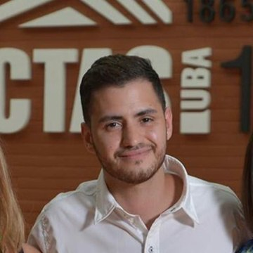
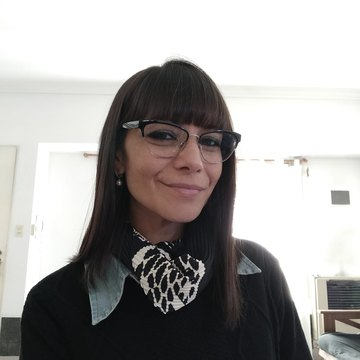
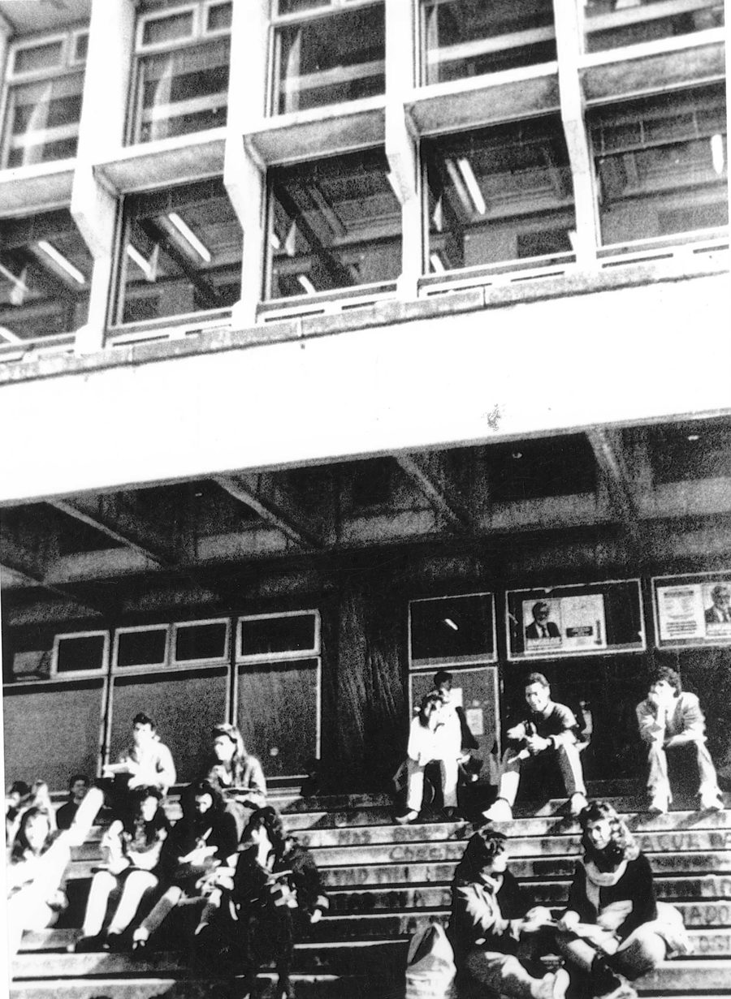

Sobre el CeFIEC
El CeFIEC fue creado el 4 de octubre de 1993 por el Consejo Directivo de la Facultad de Ciencias Exactas y Naturales como Centro de Formación e Investigación en Enseñanza de las Ciencias. En 2010, mediante la Resolución CD Nº 2715/10, se constituyó como Instituto de Investigaciones CeFIEC:
“Tendrá como objetivo desarrollar las actividades de investigación y extensión universitaria relacionadas con los procesos y técnicas de aprendizaje y enseñanza de las Ciencias Exactas y Naturales para el nivel inicial, medio y superior.”
En la actualidad el Instituto se centra en las actividades de investigación y extensión, mientras que la Comisión de Carreras de Profesorado de Enseñanza Media y Superior (CCPEMS) se ocupa de las vinculadas con la formación docente.
Gobierno del Instituto

Dra. Andrea Revel Chion
Dirige el grupo Perspectivas críticas para la enseñanza de la salud.

Dr. Agustín Adúriz-Bravo
Investigador CONICET y Profesor Asociado. Dirige el GEHyD.

Andrés Nicora
Comité Asesor
Representantes por profesores investigadores
Representantes de auxiliares de investigación

Reglamento de funcionamiento
El Instituto de Investigaciones CeFIEC tiene como objetivo general el desarrollo de investigaciones e innovaciones, la formación de recursos humanos y la extensión universitaria en el campo de la Didáctica de las Ciencias Exactas y Naturales.
Para lograrlo, los objetivos específicos del Instituto son desarrollar:
- La producción de conocimiento científico y de innovaciones sobre los procesos de enseñanza y de aprendizaje de las Ciencias Exactas y Naturales, con énfasis en las didácticas específicas de la biología, química, física, matemática, computación, geología y ciencias de la atmósfera y los océanos.
- El dictado de cursos, seminarios y carreras de posgrado tendientes a ampliar y mejorar la formación de distintos profesionales, en torno de la enseñanza de las ciencias.
- Insumos para la toma de decisiones de política educativa referidas a las disciplinas científicas y campos de investigación de su competencia.
- Vínculos académicos con instituciones y grupos de investigadores en enseñanza de las ciencias, del país y del exterior.
- La transferencia de la actividad académica universitaria hacia la sociedad, a través de actividades de extensión universitaria.
Historia
El 4 de octubre de 1993, a partir de la propuesta de un conjunto de profesores de varios departamentos de la Facultad, el Consejo Directivo creó el Centro de Formación e Investigación en Enseñanza de las Ciencias (Resolución CD Nº 1093/93) y designó como directora interina a la Dra. Celia Dibar Ure. Sus objetivos generales eran propiciar:
- La formación con nivel de excelencia y la actualización permanente de docentes del área de Ciencias Exactas y Naturales.
- La investigación sobre procesos de enseñanza y aprendizaje de las Ciencias Exactas y Naturales, así como investigaciones en historia y epistemología de las ciencias.
- La intervención activa de la Facultad de Ciencias Exactas y Naturales en las decisiones de política educativa referidas a las disciplinas científicas de su competencia.
y asegurar la trascendencia de la actividad académico-científica universitaria hacia la sociedad, a través de la formación de educadores y de la divulgación de sus investigaciones.
En sus primeros años el Centro tuvo a su cargo las materias del Bloque de Formación Pedagógica de los Profesorados de la Facultad. En 2001 funcionaba en la planta baja del Pabellón 2, bajo la dirección de la Dra. Carmen Sessa, con la Prof. Patricia Sadovsky como directora adjunta.
En 2010, mediante la Resolución CD Nº 2715/10, se constituyó como Instituto de Investigaciones CeFIEC.
